Introduction
The wine industry has been around longer than most. Despite its longevity, we have only sampled a small fraction of the total amount of wines that can be manufactured. Most wines share a similar chemical base with only small differences in their properties accounting for variation across wines. Any given bottle of wine is just about 97% water and ethanol. The last 3% accounts for the wide array of wine flavors and qualities commercially avialable. We are interested in exploring what is important in that small difference. Exploring the physicochemical properties of wine with machine learning is not a new idea. For instance, a study successfully utilized a 3-layer ANN to predict the geographic origins of wine from zinc and magnesium levels [2]. In another study, neural networks were also used to categorize 54 samples of wine into 2 red wine classes, resulting in accuracies higher than 95% for the 2 classes [1]. In another case, the age of rice wine was classified using L S-SVMs and their determination coefficients [3]. Our study hopes to use chemical data paired with human perception of quality to determine fundamental correlations between the chemical makeup of wine and the experience that one has when drinking it. The dataset we will be using comprises physicochemical attributes, such as acidity, sugar content, and alcohol, alongside sensory evaluations, enabling the prediction of wine quality on a scale from 0 to 10 for both red and white variants.
Problem Definition
With the goal of enhancing the winemaking process, we hope to understand the intricate relationship between chemical features and perceived quality. By leveraging data analysis and machine learning, we aim to uncover patterns and insights that can guide the creation of high-quality wines with optimized chemical compositions. These insights are expected to guide vintners in crafting wines with optimized chemical profiles, elevating the overall quality and sensory appeal of their products. We aim to lay a foundation for the development of computational and generative methodologies in wine creation. In this pursuit, we collected and cleaned two data sets that contain chemical features and corresponding wine quality for red and white wine, respectively.
Methods
Data Preprocessing and Unsupervised Learning
Two datasets were gathered for this work, a red wine dataset and a white wine dataset. Each dataset contained eleven features: fixed acidity, volatile acidity, citric acid, residual sugar chlorides, free sulfur dioxide, total sulfur dioxide, density, pH, sulphates, and alcohol. They also both contained one target value, quality. The first step in this study was to reformat the datasheets, making them readable by programs like Excel and the Python pandas library. After this, a third dataset was created by combining the two datasets and adding a feature named "red wine," which had a value of "1" for the points from the red wine dataset and a value of "0" for the points from the white wine dataset.
Before training any machine learning models, we started by making plots to show the distributions of each feature and their relationships to the target variable. This was done by generating a histograms for all of the columns in the dataset and scatter plots of the relationships between each of the features and the target (wine quality). These plots were generated for the two original datasets and not for the combined data as it does not add in addional information.
We employed Principal Component Analysis (PCA) to reduce the total feature dimensionality from eleven to two. While these two features did not have any physical meaning, they supported visualization on a plot. This is useful becuase it shows where in chemical space the data points are in relation to each other. These visualization plots were generated for the red wine dataset, white wine dataset, and the combined dataset. For the combined dataset, only the eleven chemically relevant features were fed into the algorithm. The "red_wine" feature was dropped so that the chemical make-ups of red and white wine could be compared.
Supervised Learning Methods
Artificial Neural Network Model (ANN)
An Artificial Neural Network (ANN) was employed as it aligns with the existing study's the use of a "multilayer perceptron," a term that refers to a similar neural network structure. The choice of an ANN for the classification task is informed by its architectural flexibility and its efficacy in handling large datasets. This makes it particularly suitable for analyzing complex patterns in wine quality prediction, where it can model the non-linear relationships between physicochemical properties and the sensory quality of wine.
Random Forest Model
Random Forest models are used because of the ability to learn feature importances. When training and predicting, we used both classification and regression because we have integer data. The thought process is that each provides a benefit. Classification allows for only integer predictions, while regression allows the model to understand that a quality prediction of 8 is better than a prediction of 2 for a wine of quality 9. Additionally, a Random Forest model that predicts the wine class was built for the purpose of buidling a pipeline to predict novel wine candidates. For all of these models, GridSearchCV was used to optimize the hyperparamters of the model, tailoring the model for our application.
Model Exploitation - Random Forest Pipeline
The final aspect of this experiment was designing a pipeline to design wine candidates. This pipeline generates all permutations from a list of values for each of the eleven features, passes these generated values to predict if the blend created would likely be red or white wine. This prediction creates a fork in the pipeline, sending the candidates to have their qualities predicted by the relevant model. From here, we select the highest quality blends and suggest them for future study. It is important to note that there were no chemical constraints that were applied to these formulations, so an important next step would be to assess viabililty.
Results and Discussion
Feature Distribution
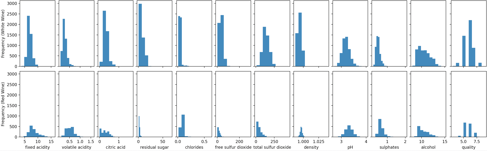The feature distribution plots showed us that many of the descriptors are right-skewed, meaning that most of the data points fall in the lower regions. This is true for all of the plots except for pH which for both white and red was approximately normally distributed. The descriptor vs. quality plots show few direct relationships except for in the ‘alcohol’ and ‘volatile acidity’ features which are loosely positively and negatively correlated, respectively.
Feature-Target Scatter Plots
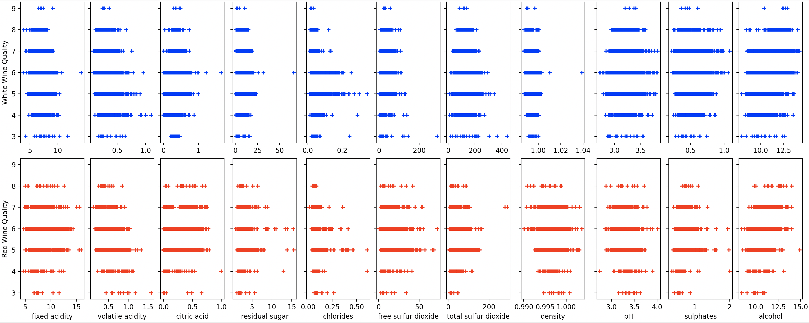The feature-target scatter plots show noisy data with few trends for most of the features. However, there are a few features that show a rough trend with the wine's quality. For white wine, the features that show a trend are: alcohol and fixed acidity. For red wine, the features taht show a trend are alcohol, sulphates, density, and volatile acidity. Some of these trends have positive correlations and others have negative correlations.
Principal Component Analysis
The PCA visualization showed a distinct difference between the chemical spaces of white and red wine in the combined plot. This suggests that a classification technique to predict if a point is red or white wine should be highly accurate. In the individual plots, there was some separation between the different wine qualities. The red wine data points with larger PC1 values and white wine data points with larger PC0 values tended to have higher qualities.
Random Forest Quality Models
The results of the random forest algorithm yielded an accuracy of 69% for white wine, 65% for red wine, and 69% for combined wine. We discovered that the white wine had higher feature importance in all aspects except for the alcohol content levels. The most important features for predicting wine quality are alcohol, sulfates, and free sulfur dioxide. These features are directly related to the chemical composition of wine, which has a significant impact on its quality. The feature importance scores can be used to gain insights into the winemaking process and to develop strategies for improving wine quality. For example, winemakers can focus their efforts on controlling the more important features, such as the sulfates.
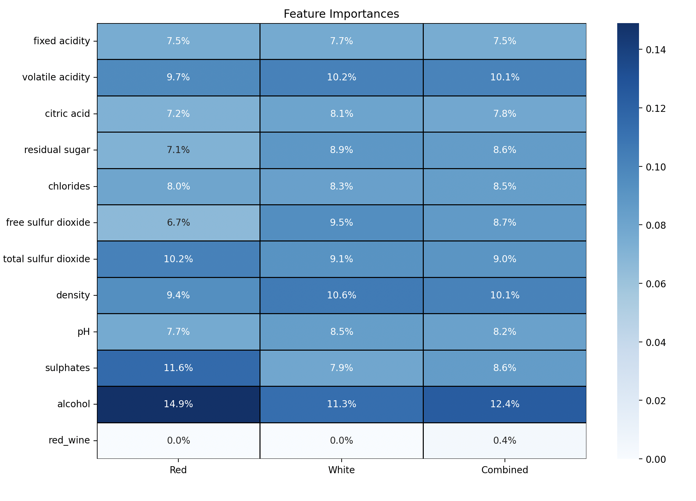 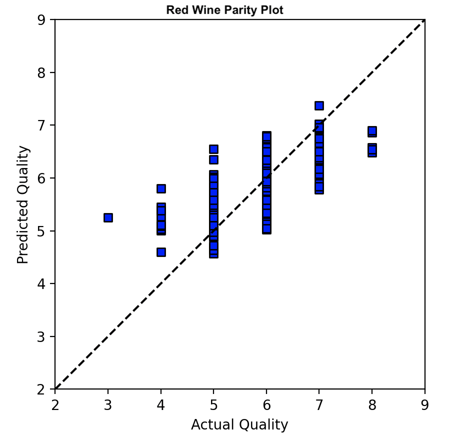 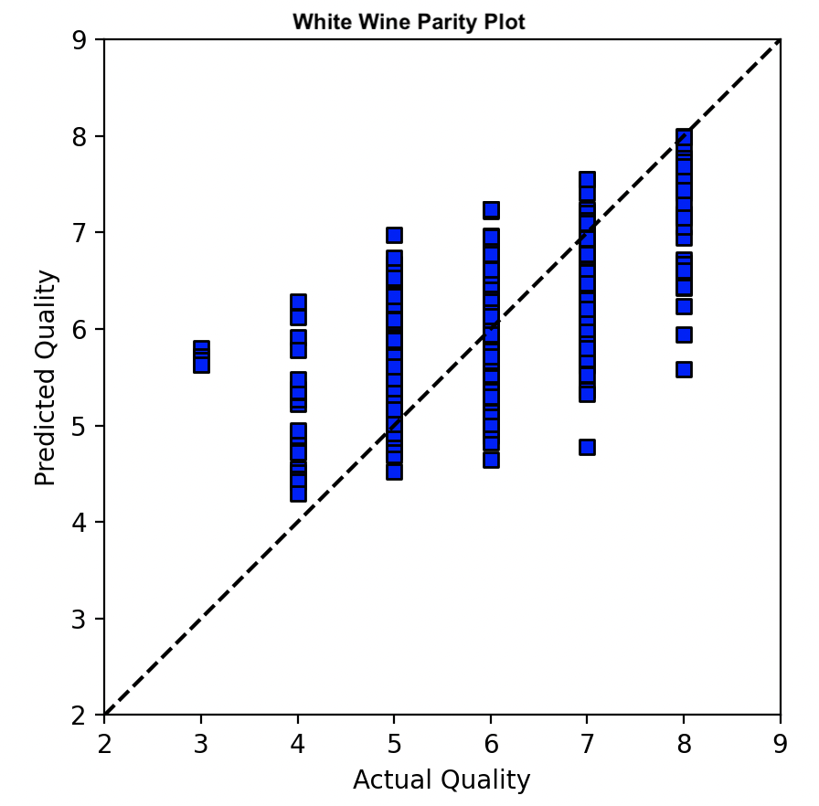 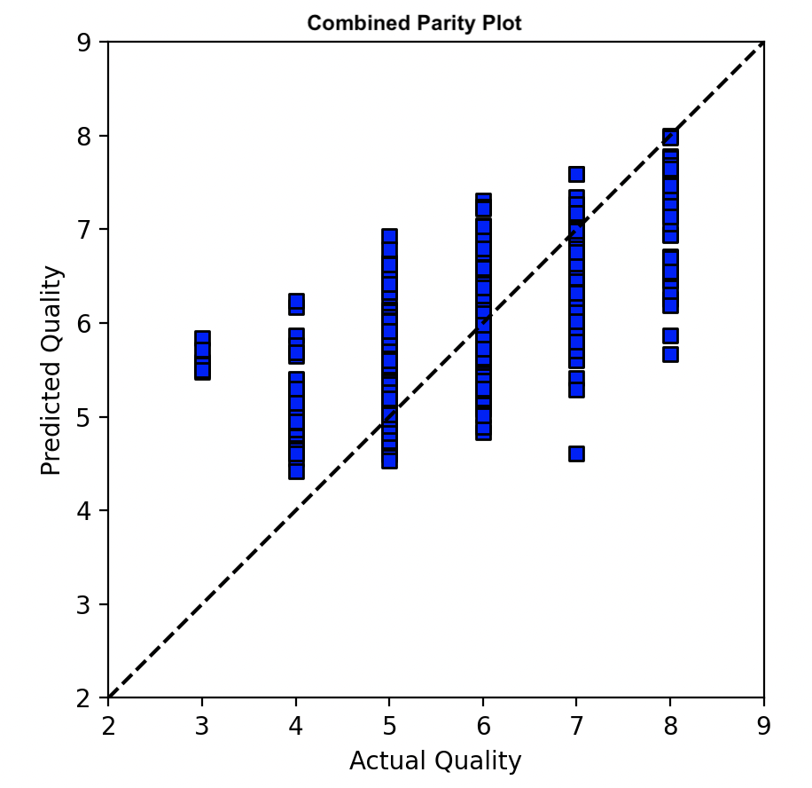 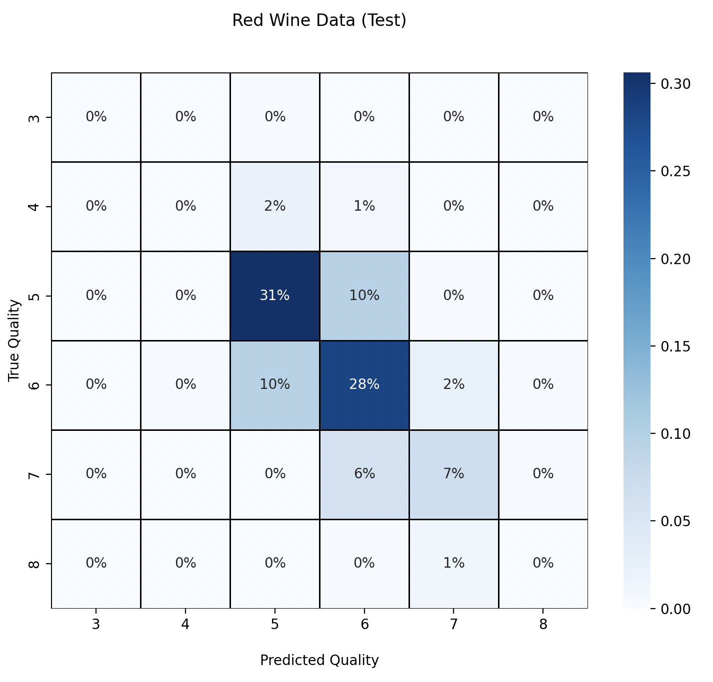 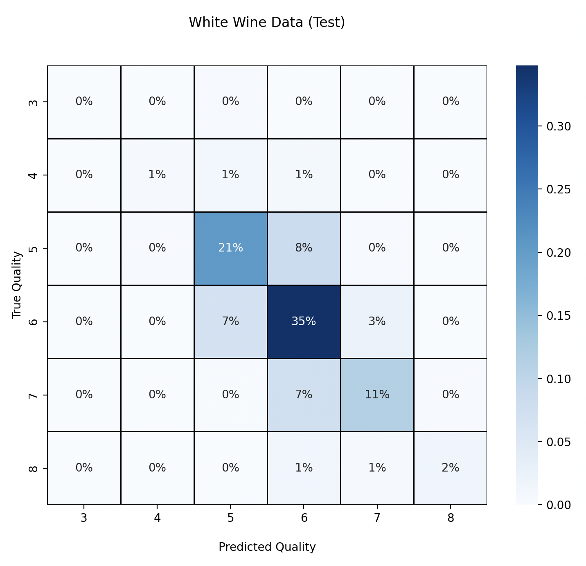 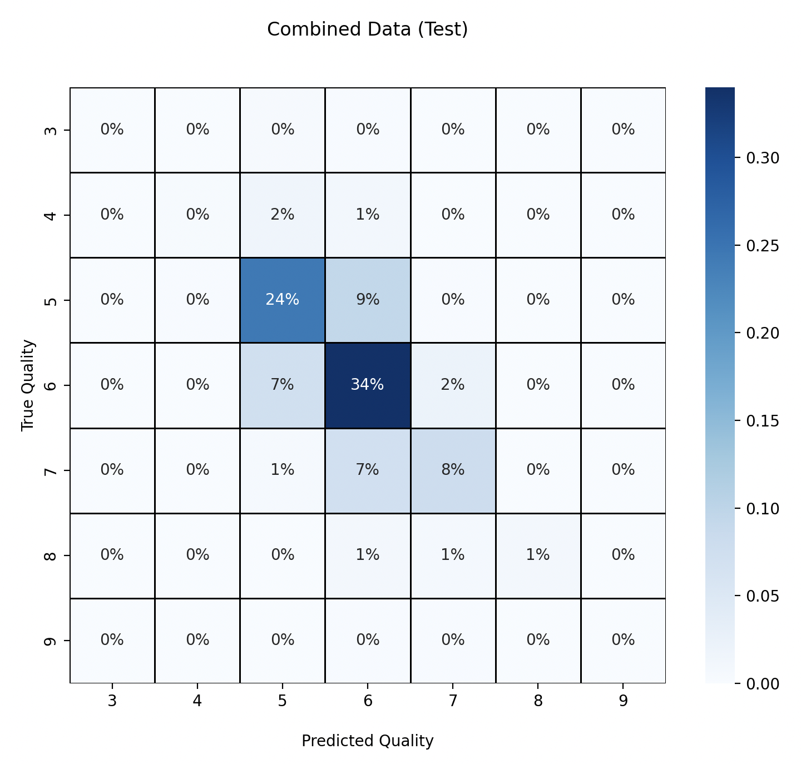Random Forest regression addition
The results of the random wine type yielded a prediction accuracy of 70% In the hopes of improving the accuracy of the random forest model we implement we added cross validation and hyper parameters. The code then proceeds to train and evaluate RandomForestClassifier and RandomForestRegressor models on different wine datasets. It uses grid search to optimize hyperparameters and prints out cross-validated scores, test accuracies or mean squared errors, depending on whether it's a classification or regression task. for red wine we got a Regression Error (MSE) of 0.3065, for white we got a score of 0.3469 and in the combined data set we got a score of 0.3374.
Artificial Neural Network Quality Models (ANN)
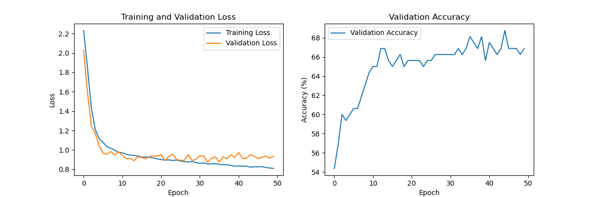 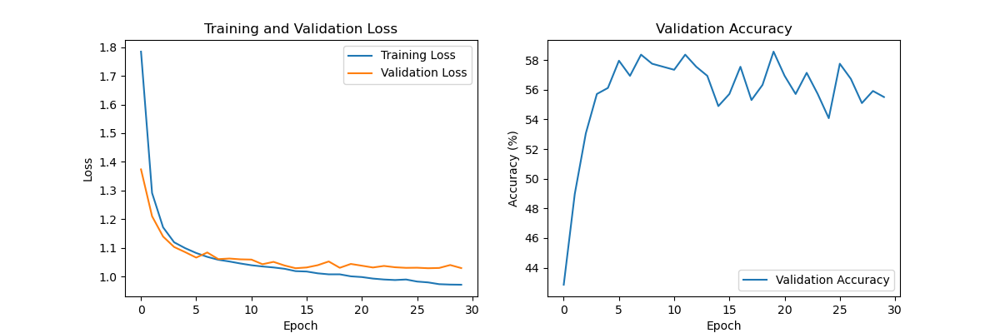 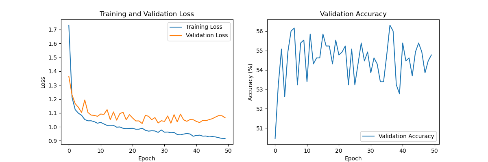These charts show the change in error and accuracy as a function of epoch in the Artificial Neural Network models. The top and middle charts are for the red and white wine single task model while the bottom charts are for the multi-task model that combines data for red and white wine. The single task models appear to be much more stable than the multi-task model. This is evidence to the idea that the multi-task model might not be beneficial.


Lastly, in the neural network we can see that the prediction accuracy for white wine and red wine was the most accurate in places where we had the most data, The classes seem to range from 3 to 9, with no instances of classes 0, 1, or 2. The highest accuracy is observed for the middle quality classes (5 and 6), while the lowest accuracy is for the extreme quality classes (3, 4, 7). This could indicate that the model is better at predicting average-quality wines than it is at distinguishing between the more nuanced high or low-quality wines. Data absence for lower and higher classes is attributed to their non-inclusion in the dataset.

In the model performance comparison, the red wine model performs the best, while the combined model performs the worst. This suggests that combining red and white wines into a multi-task model dilutes the predictive power since red and white wines may have different characteristics and quality determinants. This conclusion is supported by the differences in feature importance values that were generated by the random forest model and the ANN plots that show the developement of error over time. The white wine model performs slightly better than the combined model but not as well as the red wine model. In the quality distribution, the red wine had higher quality wine, however, the white wine had some instances of going up to a rating of 9 on the quality. Our achieved accuracy stands at 61.25% for Red Wine and 56.12% for White Wine.
Candidate Design Pipeline
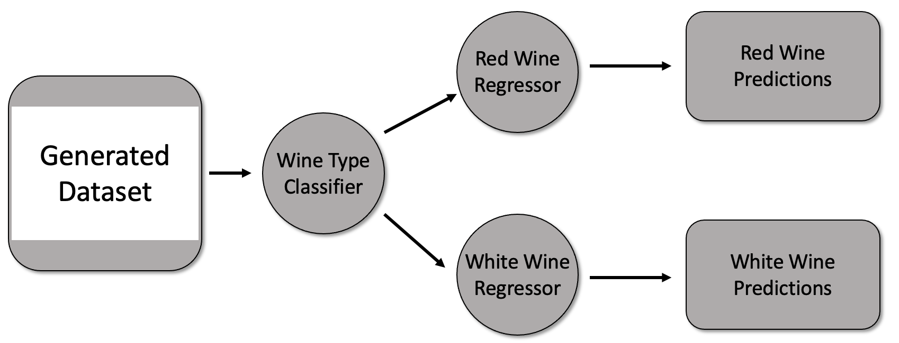The struture of the pipeline is shown above, showing the flow of data through it as newly generated formulations are passed through it. Due to the linearly seperable nature of the dataset, the classification model was able to achieve an accuracy > 99% for both red and white wine.
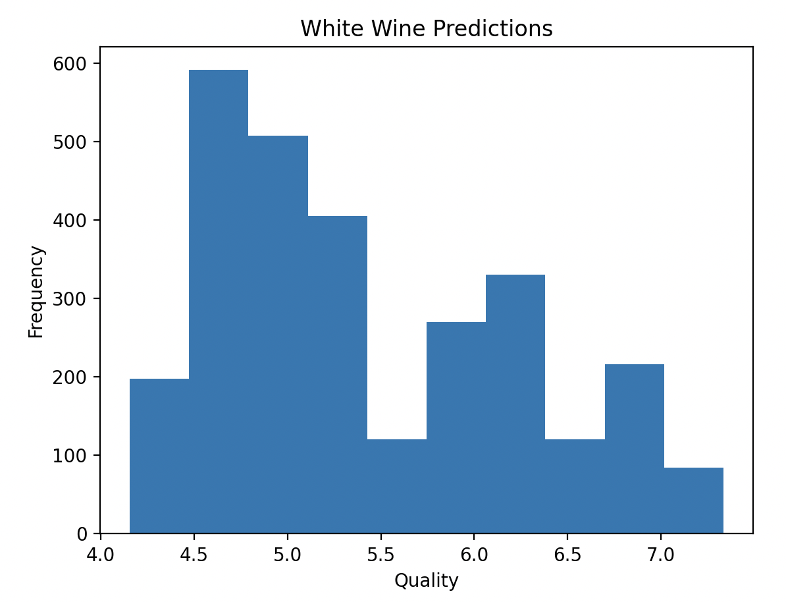 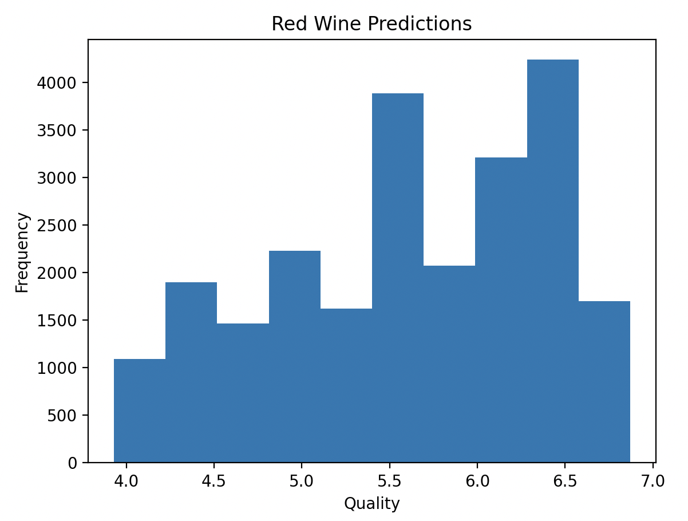The prediciton results for the red and white wine candidates are shown in these histograms. It can be seen that many of the white wine predictions are lower while the red wine predictions tend to be higher. However, the quality of the white wine candidates reach higher maximum values. This is more an attribute of the training data that was passed into the model than anything else. As stated earlier, all these candidates are hypothetical blends and should be validated by a chemist or wine expert to assess synthetic viability.
Next Steps
- Improve the prediction accuracy of the Random Forest and ANN models.
- Assess the Chemical Viability/ Synthesizability of Candidate Blends
Contribution Table
| Team Member | Task |
| Oliver Hvidsten | Pre-Processing (Feature Graphs, PCA), Feature Importance Heatmap, Candidate Design Pipeline, Confusion Matricies, Wine Type Classifier, Final Write-Up |
| Ian Knight | ANN Developement + Model Training, Prediction Accuracy by Class and Data Analysis |
| Daniyal Mirza | Classification models, regression models,post processing figures, and predication data |
| Mohamed Shetewi | Post processing analysis, algorithm optimization on forest tree, and RF processing figures |
| Nicole Woo | GitHub Pages, PCA plotly |
Proposed Timeline
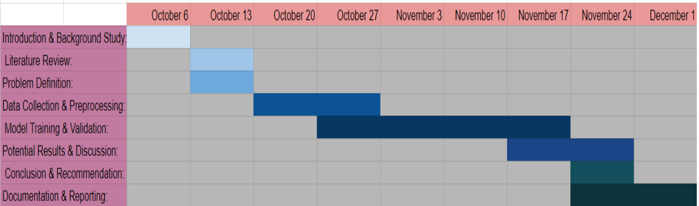References
[1] https://pubmed.ncbi.nlm.nih.gov/19071612/
[2] https://www.semanticscholar.org/paper/Classification-of-wine-samples-by-means-of-neural-Sun-Danzer/eed2ff298543139bff6f0627b9f0a15d82dc1a58
[3] https://pubmed.ncbi.nlm.nih.gov/18167072/
[4] https://www.ncbi.nlm.nih.gov/pmc/articles/PMC4973766/